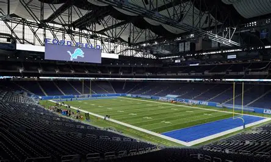

The Detroit Lions are a professional football team based in Detroit, Michigan. The team has a long history in professional football and has built a passionate fan base over the years.

The franchise began as the Portsmouth Spartans before moving to Detroit in 1934 and becoming the Detroit Lions. The team won multiple NFL championships during its early history.